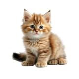
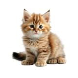

OBJETIVO
¡Bienvenido a Gatolletas, tu rincón virtual dedicado al amor y cuidado de nuestros adorables amigos felinos! En esta encantadora página, nos sumergimos en el fascinante mundo de los
gatos, fusionando la dulzura de estos peludos compañeros con el encanto de las deliciosas galletas que tanto nos gustan a todos. Aquí, nos embarcamos en un viaje de recomendaciones
sobre el cuidado integral de nuestros amigos peludos. Desde consejos nutricionales para mantener a nuestros gatitos felices y saludables hasta sugerencias para crear entornos
divertidos que estimulen su curiosidad, en Gatolletas nos esforzamos por ofrecer información valiosa y práctica. Descubre secretos sobre la alimentación adecuada para tu pequeño
felino, aprende sobre los rituales de higiene que mantendrán su pelaje suave y brillante, y explora ideas encantadoras para mantenerlos entretenidos y activos. En Gatolletas,
entendemos que cada gatito es único, ¡así que nuestras recomendaciones están diseñadas para adaptarse a las necesidades individuales de cada peludo miembro de la familia! Además,
Gatolletas te conecta con otras páginas de interés, ofreciendo enlaces cuidadosamente seleccionados para ampliar tu conocimiento y explorar más a fondo el fascinante universo de los
gatos. Cada enlace es como una galleta crujiente de información, lista para ser disfrutada. Sumérgete en Gatolletas, donde la dulzura de los gatos se encuentra con la delicia de las
galletas. Estamos aquí para hacer que cada día con tu peludo amigo sea inolvidable y lleno de amor. ¡Explora, aprende y comparte el cariño por nuestros adorables compañeros peludos en
Gatolletas! üêæüç™
CONCEPTO DE GATOLLETAS
La relación entre los gatos y las galletas es tan encantadora como diversa. En el encantador universo de los gatitos y las galletas, la ternura se desborda como un río de dulces
emociones. Los mininos, con sus ojitos curiosos y ronroneos suaves, son como pequeñas bolitas de algodón azucarado que nos roban el corazón con cada movimiento juguetón. Imagina esos
momentos mágicos en los que tu gatito se acurruca en una esquina soleada, sus patitas se enredan de manera adorable, mientras disfrutas de una taza de té acompañada de galletas recién
horneadas. Es como si el mundo se pausara para apreciar la dulzura de esos instantes, donde la compañía suave de tu peludo amigo se mezcla perfectamente con el crujir tentador de cada
bocado. Los gatos, con su elegancia felina, nos recuerdan a menudo a las galletas recién salidas del horno: suaves por dentro y llenos de calidez. Las orejitas esponjosas y las miradas
curiosas son como los detalles decorativos en cada galleta que hacen que cada uno sea único y especial. En este rincón encantado, nos perdemos en la suavidad de las caricias gatunas y
en el placer de saborear galletas de vainilla que despiertan nuestros sentidos. Es como un cuento de hadas dulce e inocente donde los gatitos y las galletas bailan en perfecta armonía,
creando un festín de momentos tiernos y deliciosos. Así que, abre tu corazón a la dulzura infinita de estos pequeños exploradores peludos. Cada día es una nueva página en el libro de
la ternura, donde los gatitos y las galletas te invitan a sumergirte en un mundo donde el amor y la dulzura son la esencia misma de la vida. üåàüêæüç™

.png "Gato 1 transparente") 
